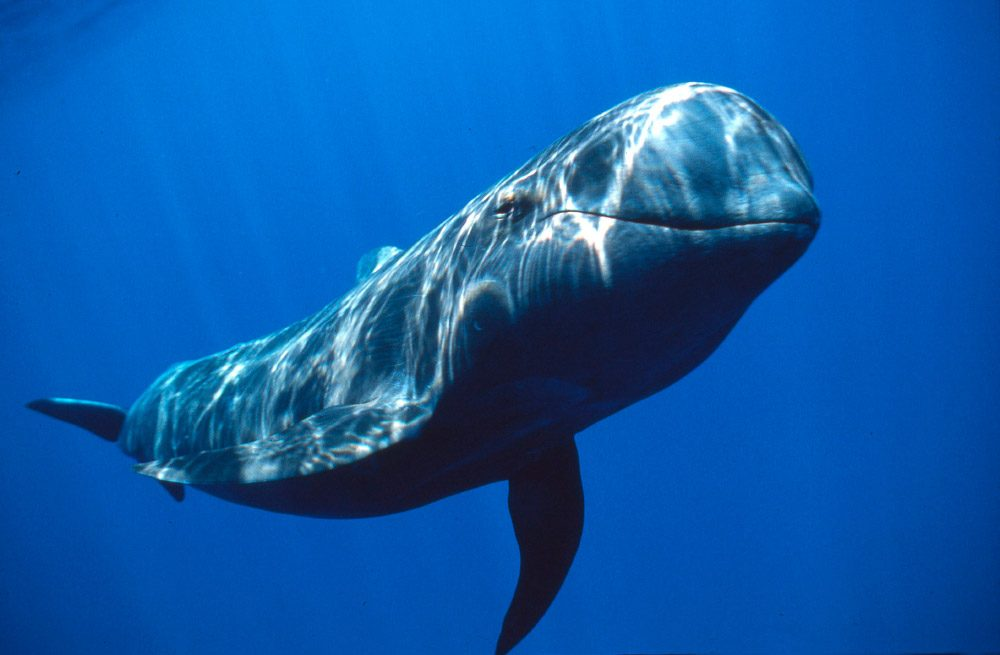

Tres diferentes tipos de ballenas

ballena azul 1
una ballena chida.
Ballena gris
ballena dible chida.

Third slide label
Some representative placeholder content for the third slide.
La ballena azul es el animal conocido más grande que que vive en la Tierra. Estos majestuosos mamíferos marinos dominan los océanos con sus 30 metros de longitud y hasta 180 toneladas de peso. Solo su lengua puede pesar tanto como un elefante, y el corazón, como un automóvil. Recibe también el nombre de rorcual azul, compartiendo familia con otros rorcuales como el rorcual común o el rorcual boreal. Las ballenas azules alcanzan estas desorbitadas dimensiones con una dieta compuesta de plancton y krill, un animal parecido a un camarón diminuto. En determinados momentos del año, una ballena azul adulta consume unas 3,5 toneladas de krill al día. Es precisamente el aumento de krill lo que los expertos señalan como la causa de que estos cetáceos, gravemente amenazados, estén volviendo a dejarse ver por aguas españolas.
Tres diferentes tipos de ballenas
una ballena chida.
ballena dible chida.
Some representative placeholder content for the third slide.

A pesar de una moratoria sobre la caza comercial de ballenas y la prohibición del comercio internacional de productos de ballenas, tres países, Islandia, Japón y Noruega, continúan con su caza comercial de ballenas. Se matan más de 1,000 ballenas al año con fines comerciales. Durante el siglo XX, la ballena azul, el animal más grande que jamás haya existido, fue casi exterminada debido a la caza comercial de ballenas. Estados Unidos y otros países miembros de la Comisión Ballenera Internacional (CBI) han tratado durante años de persuadir a Islandia, Japón y Noruega para que pongan fin a la caza de ballenas, ya que socava la eficacia de la prohibición de la caza comercial de ballenas establecida por la comisión. Sin embargo, en 2019, Japón decidió alejarse de la CBI y ahora realiza la caza comercial de ballenas en sus propias aguas territoriales, fuera de cualquier control internacional.El calentamiento de los océanos y la pérdida de hielo marino en el Ártico y la Antártida pueden afectar los hábitats y la alimentación de las ballenas. Es probable que grandes parches de diminutas plantas y animales, de los que se alimentan, se muevan o cambien en abundancia a medida que el cambio climático altera la temperatura del agua del mar, los vientos y las corrientes oceánicas.
Los biólogos marinos estudian y llevan a cabo una investigación sobre todos los aspectos de la
vida marina. Sin embargo, a menudo trabajan con organismos pequeños y microorganismos, tales como
peces, bacterias, plancton, algas y larvas de peces, etc. Los biólogos marinos aplican tecnologías
sofisticadas, como microscopios electrónicos para el estudio de las muestras, y ordenadores para
modelar los ecosistemas marinos. Analizan los resultados estadísticos, utilizando medios informáticos
y computadoras.
Haremos mención honorifica a 3 biologos importantes a continuación:

Juan Manuel, Nacido en Durango, egresado como biologo maritivo.

Francisco Juares, biologo especializado en el área Maritima

pedro Fracisco, Biologo especializado en el area.
Durante muchos años WWF ha trabajado con la Comisión para la Conservación de los Recursos Vivos Marinos Antárticos (CCRVMA) para proteger los hábitats más críticos de especies emblemáticas como ballenas, pingüinos, focas, aves marinas y su presa: el diminuto krill antártico. En el océano Antártico o Meridional, la CCRVMA se ha comprometido a implementar una red de áreas marinas protegidas alrededor de la Antártida para proteger una diversidad de vida silvestre afectada por el cambio climático, incluyendo las áreas donde las ballenas se alimentan del pequeño krill. WWF trabaja con los científicos para generar información importante que ayude a los gobiernos a proteger estas vitales áreas de alimentación.
La ballena jorobada (Megaptera novaeangliae), también llamada ballena yubarta, es una especie de cetáceo misticeto de la familia Balaenopteridae. Es una de los ballenas más grandes, los adultos tienen una longitud de 12 a 16 m y un peso aproximado de 36.000 kg. La especie posee una forma corporal distintiva, con aletas pectorales largas y cabeza nudosa. Es un animal acrobático que con frecuencia se impulsa sobre la superficie para luego golpear el agua. Los machos emiten un canto complejo, el cual dura de diez a veinte minutos y se repite por horas cada vez. El propósito del canto no es claro. Sin embargo, parece desempeñar una función en el apareamiento.
El “IME” es una empresa privada fundada en el año 1984 por un grupo de profesionales del sector con el objetivo prioritario de desarrollar actividades que impulsaran el prestigio de la presencia marítima española en el sector naval. Entre sus actividades destacan aquellas dedicadas a cubrir las necesidades de formación existentes en la actividad marítima (programas máster, cursos monográficos, cursos de postgrado y especialización, etcétera), realizadas o bien exclusivamente por el IME
En junio de 2019 tuvo lugar la presentación de la recientemente creada «Cátedra del Mar», fruto de la colaboración entre la Universidad Católica de Murcia (UCAM) y el IME. Esta cátedra nace con el claro objetivo de fomentar la vocación marítima, trabajando por la mar y por sus profesionales. Su forma de trabajar estará alineada con la Agenda 2030 de la ONU para el desarrollo sostenible, persiguiendo un entorno marítimo más sostenible.
El CEI·MAR es una unión de universidades, centros de investigación y empresas de Andalucía, sur de Portugal y norte de Marruecos, que probablemente constituyan una de las mayores alianzas de España, y tal vez del mundo, en el ámbito marino-marítimo.
| # | Especies de ballenas | comida | hábitat |
|---|---|---|---|
| 1 | balla franca | Kril-alimento base de las ballenas. | plataformas continentales |
| 2 | ballena gris | Copépodos planctónicos. | campos de hielo abierto |
| 3 | ballena azul | Otros pequeños animales | mar profundo |